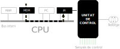

Ara que coneixem les part internes de la CPU podem vore amb més deteniment, els passos que es seguixen durant
les fases del cicle d'instruccions:
Fase de busca
Com sabem, el registre PC (comptador de programa) conté l'adreça de memòria de la següent instrucció que s'ha d'executar.
En esta primera fase del cicle d'instruccions, la UC demana a la memòria que li subministre esta instrucció.
Es seguixen estos passos:
Unitat de control
Passa el contingut del registre PC (comptador de programa) al registre MAR (registre d'adreces de memòria).
Permet eixir el contingut del registre MAR (registre adreces de memòria) al bus d'adreces.
Envia un senyal de lectura a la memòria. La línia de lectura forma part del bus de control.
Memòria
Al rebre el senyal de lectura captura l'adreça que hi ha en el bus d'adreces i la guarda en el
MAR (registre adreces de memòria).
Busca internament la paraula que està en l’adreça que indica el MAR.
Quan l'ha trobat, la deixa en el registre MDR (registre dades de memòria).
Avisa al processador, amb un senyal de control que ja pot recuperar la paraula sol·licitada.
Deixa eixir al bus de dades la paraula continguda en el MDR.
Unitat de control
Al rebre el senyal que ha enviat la memòria, llig el contingut del bus de dades i el copia en el
registre MDR (registre dades de memòria).
Li suma 1 a l'adreça emmagatzemada en el registre PC,
d'esta manera queda apuntant a la següent instrucció per al següent cicle d'intruccions.
Fase de descodificació
La unitat de control passa la paraula del registre MDR al registre IR (registre d'instruccions).
A continuació, interpreta el contingut d'este registre i decidix quins són els passos a seguir.

Fase d'execució
La unitat de control genera una seqüència de senyals de control que arriben a les diferents parts de la CPU (registres i ALU).
Eixa seqüència dicta el moviments de paraules i les operacions que s’han de fer per a executar la instrucció.
Algunes d’estes accions poden ser:
Transferència de dades entre la CPU i la memòria principal o la E/E.
Operacions aritmètiques o lògiques sobres les dades.
Alteració de la seqüència d'operacions (salts)
Una combinacions de les anteriors.
L’execució d’una instrucció pot implicar més d’un accés a la memòria principal a banda del necessari per a llegir
la pròpia instrucció. Ara quan vegem que fan les instruccions quedarà clar.